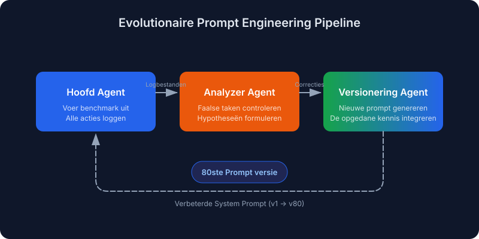
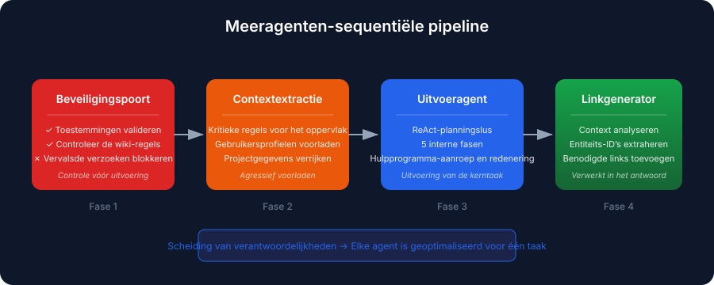
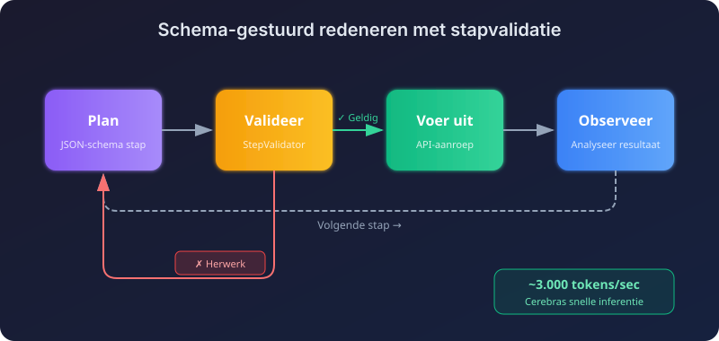
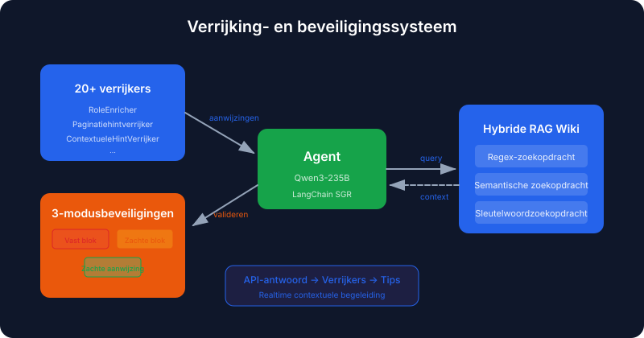
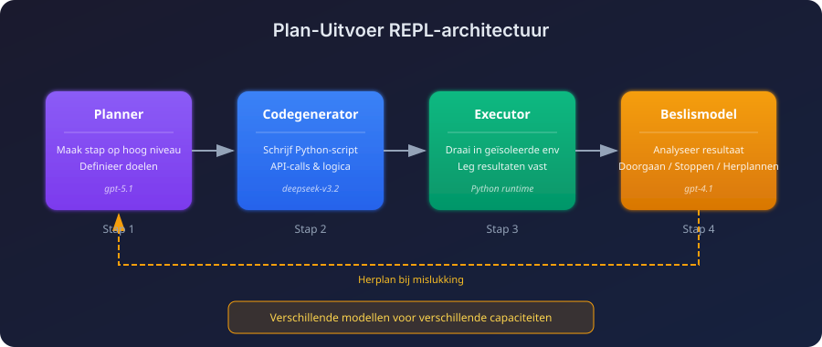
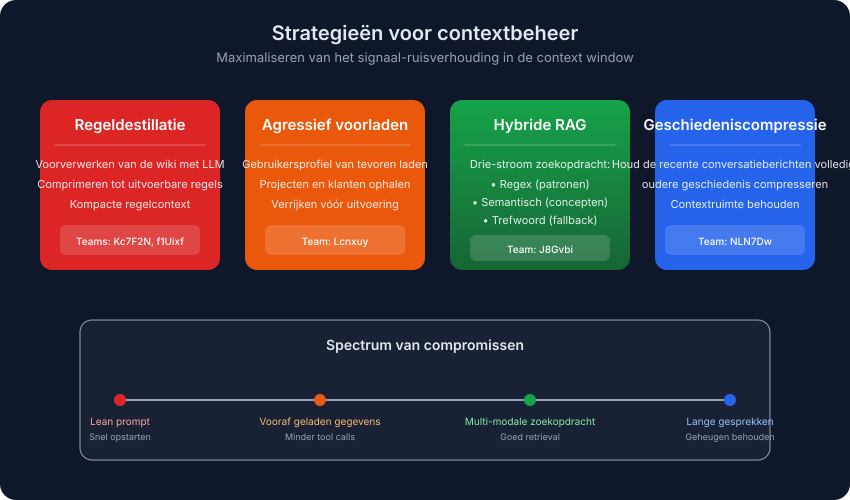
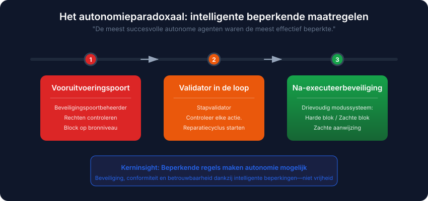

Automatische vertaling
Dit artikel is automatisch vertaald vanuit de oorspronkelijke Engelse versie.
Enterprise RAG Challenge 3 (ECR3): Succesvolle architectuurvoorbeelden van AI-agenten
De Enterprise RAG Challenge 3 (ECR3) is zojuist afgerond. Er namen 524 teams deel, er werden meer dan 341.000 agent-executies uitgevoerd, en slechts 0,4% van de teams behaalde een perfecte score. Nu de ranglijst en verslagen openbaar zijn, heb ik de winnende oplossingen onderzocht om te achterhalen waarin de beste teams zich onderscheidden.
In deze post wordt uitgelegd wat ECR3 inhoudt, hoe de taken eruitzagen, en welke patronen zich herhaalden in de succesvolle architecturen.
Kort samengevat: Pipelines met meerdere agenten zijn superieur aan monolithische oplossingen. Het beste team maakte gebruik van evolutionaire prompt-engineering gedurende meer dan 80 geautomatiseerde iteraties. De winnaars besteedden veel aandacht aan beveiligingsmaatregelen (beveiligingscontroles vóór uitvoering, validatoren tijdens de uitvoering en bescherming na uitvoering) en aan strategieën voor het beheren van context. Wat er in de context werd opgenomen, was belangrijker dan de hoeveelheid.
Wat is de Enterprise RAG Challenge?
De Enterprise RAG Challenge 3 is een een grootschalig onderzoeksvoorproject dat op crowdsourcing is gebaseerd dat test hoe autonome AI-agenten omgaan met complexe zakelijke taken. In tegenstelling tot statische benchmarks wordt ECR3 uitgevoerd op de Agentic Enterprise Simulation (AGES), een discrete-event simulatie die een Realistische enterprise-API.
Waarom ECR3 belangrijk is
Via AGES werken agents binnen een virtueel bedrijf dat beschikt over:
- Medewerkerprofielen met specifieke vaardigheden en afdelingen
- Projecten met teamtoewijzingen en klantrelaties
- Corporatieve wikis met bedrijfsregels en toegangshiërarchieën
- Tijdregistratie en financiële processen
Elke taak start zijn eigen simulatie met schone gegevens, zodat agenten niets tussen de verschillende uitvoeringen kunnen onthouden.
De moeilijkheidsindicator ranglijst is streng:
| Metrica | Waarde |
|---|---|
| Geregistreerde teams | 524 |
| Totaal aantal agentuitvoeringen | 341,000+ |
| Beschikbare taken | 103 unieke bedrijfsopdrachten |
| Perfecte score (100,0) | Alleen 0,4% van de teams |
| Score ≥ 0.9 | Alleen 1,1% van de teams |
Soorten taken
De taken omvatten meerdere vaardigheidsgebieden:
- Meerstappige redenering: Koppeling van medewerkerskills aan projecttoewijzingen
- Toestemmingvalidatie: Voorkom ongeautoriseerde wijzigingen van salarissen of toegang tot gegevens
- Ambigue vragen: Omgaan met meertalige en herformuleerde gebruikersverzoeken
- Strikte outputcompliantie: Voeg verplichte entiteitslinks toe aan de antwoorden
Wat er daadwerkelijk heeft gewonnen
Vier patronen kwamen steeds weer bovenaan de ranglijst voor:
- Meerpersoons-pipelines zijn superieur aan monolithische agents. Het opdelen van de taak leverde betere resultaten op dan wanneer één grote agent alles probeerde te doen.
- De meest autonome agents hadden ook de strengste beperkingen. Beperkende regels werden niet achteraf toegevoegd.
- Geautomatiseerde prompt-evolutie is beter dan handmatige ontwikkeling. De beste prompts gingen door meer dan 80 generaties heen.
- De contextstrategie deed het grootste deel van het werk. Het ging niet om meer context, maar om de juiste context.
Beste winnende benaderingen
De vijf hieronder beschreven architecturen gaan zeer uiteenlopende richtingen op, van volledig geautomatiseerde prompt-evolutie tot hybride zoekmethoden. Elke architectuur bevat elementen die nuttig kunnen worden overgenomen.
1. Evolutieve prompt-engineering (Team VZS9FL / @aostrikov)
De de benadering met de hoogste score Geautomatiseerde prompt-engineering via een zelfverbeteringslus.

In plaats van prompts handmatig af te stemmen, heeft het team een drie-agentenloop ontwikkeld die het agents in staat stelt te leren van zijn eigen fouten.
Drie-agent-pijpleiding:
| Agent | Rol |
|---|---|
| Hoofdagent | Voert de benchmark uit en logt alle acties en fouten |
| Analyzer Agent | Beoordeelt mislukte taken en formuleert hypothesen over de oorzaak. |
| Versionerende agent | Genereert een nieuwe versie van de prompt die de verkregen kennis integreert. |
Het resultaat: De productieprompt was de 80e automatisch gegenereerde versie. Elke versie corrigeerde een specifiek foutpatroon dat in de logbestanden van de vorige uitvoering voorkwam. De meeste daarvan waren het soort randgeval dat je pas opmerkt nadat je een uur lang naar een mislukte trace hebt gekeken.
Stack: claude-opus-4.5 met Anthropic Python SDK en gebruik van geavanceerde hulpprogramma’s.
2. Multieenheidige sequentiële pipeline (Team Lcnxuy / @andrey_aiweapps)
Hierbij is de monolithische agent vervangen door een sequentiële pipeline van gespecialiseerde componenten, waarbij elke component klein genoeg is om daadwerkelijk uitstekend te presteren in zijn specifieke taak.

De 4-fasenpijpleiding:
- Security Gate Agent: Een controle vóór uitvoering die de toegangsrechten controleert tegenover de wiki-regels voordat de hoofdloop wordt gestart.
- Context Extraction Agent: Haalt de cruciale regels uit omvangrijke prompts en laadt vooraf gegevens van gebruikers, projecten en klanten op.
- Execution Agent: Planning in ReAct-stijl met 5 interne fasen (Identiteit → Bedreigingsdetectie → Informatieverzameling → Toegangsvalidatie → Uitvoering).
- LinkGeneratorAgent: Geïntegreerd in het antwoordtool, dat de context analyseert om de benodigde entiteitslinks op te nemen.
De LinkGenerator-agent is het interessante onderdeel. Hij heeft één probleem opgelost. de meest voorkomende foutmodi: een agent die het juiste antwoord geeft, maar de verplichte referentielinks vergeet.
Stack: atomic-agents en instructor frameworks die gebruikmaken van gpt-5.1-codex-max, gpt-4.1 en claude-sonnet-4.5.
3. Redeneren onder leiding van een schema met stapvalidatie (Team NLN7Dw / Ilia Ris)
Dit team combineerde SGR met zeer snelle inferentie en een real-time validator. De strategie: meerdere snelle, gevalideerde beslissingen zijn beter dan één trage, zorgvuldig overwogen antwoord.

Belangrijkste componenten:
| Component | Functie |
|---|---|
| StepValidator | Elke voorgestelde stap wordt onderzocht. Als er fouten zijn, wordt de stap teruggezonden voor herwerking, vergezeld van relevante commentaren. |
| Contextbeheer | Het volledige plan uit de vorige ronde, plus een gecomprimeerde geschiedenis voor oudere rondes |
| Dynamische verrijking | Haalt automatisch het gebruikersprofiel, projecten en klanten op; de LLM filtreert om alleen taakgerelateerde gegevens door te laten. |
| Wrappers voor automatische paginatie | Alle lijstendpunten retourneren automatisch volledige resultaten |
Het snelheidsvoordeel komt voort uit het draaien op Cerebras met ongeveer 3.000 tokens per seconde. Bij dat tempo kan de agent zich veroorloven een stap opnieuw te overwegen, in plaats van zich te beperken tot een trage eerste reactie van een zwaarder model.
Stack: gpt-oss-120b op Cerebras, met een aangepaste implementatie van SGR NextStep.
4. Verrijker en beveiligingssysteem (Team J8Gvbi / @mishka)
Hierbij zijn niet-blockerende “intelligente hints” en een gestructureerd beveiligingssysteem toegevoegd aan een SGR-basis. Zodra de API-responsen terugkomen, controleren de verrijkers deze en geven ze de agent stilletjes aan waar hij aandacht op moet besteden.

Het verrijkingssysteem:
Meer dan 20 verrijkers De API-responsen zijn geïnspecteerd en contextuele aanwijzingen zijn geïnjecteerd:
RoleEnricher: "You are LEAD of this project, proceed with update."
PaginationHintEnricher: "next_offset=5 means MORE results! MUST paginate."
Drievoudig beveiligingssysteem:
| Modus | Gedrag |
|---|---|
| Vaste blok | Onmogelijke acties zijn permanent geblokkeerd |
| Zachte blok | Risicovolle acties worden bij de eerste poging geblokkeerd, maar zijn toegestaan bij een herpoging. |
| Zachte hint | Begeleiding zonder blokkering |
Hybride RAG-wiki: Drie zoekstromen (regex, semantisch, sleutelwoorden) die parallel lopen, waarbij de beste optie voor elk type vraag de overhand krijgt.
Stack: qwen/qwen3-235b-a22b-2507 op de LangChain SGR-framework.
5. Plan-execute REPL (Team key_concept_parallel)
Deze architectuur zet een duidelijke scheiding tussen planning en uitvoering en maakt gebruik van een codegenererende lus. Het functioneert feitelijk als een REPL: de agent plant een stap, genereert code, voert deze uit en beslist wat er vervolgens moet gebeuren.

Verschillende modellen voor verschillende taken: een planner stelt een plan op, een code-generatiemodel schrijft Python-code, en een kleinere besluitvormingsmodel bepaalt wat er na elke stap moet gebeuren.
Meermodellinstellingen:
| Fase | Model |
|---|---|
| Planning | openai/gpt-5.1 |
| Codegeneratie | deepseek/deepseek-v3.2 |
| Beslissing na stap | openai/gpt-4.1 |
| Uiteindelijke reactie | openai/gpt-4.1 |
De REPL voor het voltooien van stappen:
- De planner genereert een hooglevelstap.
- Het code-generatiemodel schrijft een Python-script voor dit doel.
- Het script wordt uitgevoerd in een geïsoleerde context.
- Het beslissingsmodel bekijkt het resultaat en kiest: doorgaan, stoppen of opnieuw plannen.
De replan-pad is waar dit ontwerp zijn nut bewijst. Wanneer een stap gedeeltelijk faalt, kan het beslissingsmodel de rest van het plan opnieuw schrijven in plaats van door te gaan met het gebroken plan.
Patronen die overal voorkwamen
Naast de afzonderlijke architecturen waren er enkele gewoonten die in bijna alle beste indieningen voorkwamen.
Contextbeheer heeft het grootste deel van het werk gedaan
De topteamen hebben begrepen dat de kwaliteit van de context het maximale niveau is dat bepaalt hoe goed een agent kan presteren.

| Strategie | Benadering | Ideaal voor |
|---|---|---|
| Regeldestillatie | Voer vooraf een pre-processing van de wiki uit met behulp van een LLM. ~320 token samenvatting | Efficiënte prompts, snelle opstarttijd |
| Agressief voorladen | Laad gebruikers-/project-/klantgegevens alvorens uitvoering | Het minimaliseren van toolaanroepen |
| Hybride RAG | Regex-, semantische en sleutelwoordsuche-stromen | Complexe zoekopdrachten |
| Geschiedeniscompressie | Zorg ervoor dat de meest recente gesprekskeren vol blijven, en comprimeer de oudere geschiedenis. | Lange gesprekken |
Afweging: Teams Kc7F2N en f1Uixf Er werd vastgesteld dat de kwaliteit van de context belangrijker is dan de hoeveelheid. f1Uixf ontdekte namelijk dat het comprimeren van historische gegevens de prestaties verzwakte, waardoor ze ervoor kozen om de volledige geschiedenis bij te houden en zich in plaats daarvan te richten op modellen met een lange context.
Beperkende factoren: hoe meer autonoom een agent is, des te meer heeft hij er behoefte aan
De agents die de hoogste scores haalden, hadden ook de strengste beperkingen om zich heen. Dat klinkt misschien tegenstrijdig, maar dat is het niet. Een autonome agent heeft meer mogelijkheden om fouten te maken, dus heeft hij meer mechanismen nodig die hem kunnen stoppen.

| Type veiligheidsrail | Wanneer | Voorbeeld |
|---|---|---|
| Voorafgaande uitvoeringscontroles | Voor het starten van de hoofdloop | De Security Gate Agent controleert de toestemmingen tegen de regels van de wiki |
| In-loop validators | Tijdens het redeneren | StepValidator controleert elke voorgestelde actie en zet herwerking in gang indien deze foutief is. |
| Na-executiebeveiligingen | Voor de definitieve indiening | Het Drie-Modus Guard-systeem controleert de volledigheid van de respons. |
Slimme hulpprogrammaomhullingen
De beste teams bouwden abstractielagen rondom de ruwe API:
- Automatische paginatie: De wrappers lopen door elke pagina heen en retourneren het volledige dataset.
- Vage normalisatie: “Willingness to travel” wordt vertaald naar “bereidheid om te reizen”
will_travelAPI-veld. - Gespecialiseerde redeneringstools:
think,plan, encriticHulpmiddelen voor gecontroleerde overweging.
Veelvoorkomende foutmodi en hoe de winnaars deze oplosten
Zelfs de beste agenten hadden dezelfde blinde vlekken. De oplossingen waren structureel van aard, en niet slechts aanpassingen van de prompt:
| Foutmodus | Beschrijving | Architectonische correctie |
|---|---|---|
| Toestemming omzeilen | Het uitvoeren van beperkte acties zonder controle op de gebruikersrechten | Agent voor de beveiligingscontrole vóór uitvoering; verplichte volgorde: Identiteit → Toestemmingen → Uitvoering |
| Ontbrekende entiteitslinks | Correcte tekstantwoord, maar ontbreken vereiste referentielinks | Embedded LinkGeneratorAgent in het response-hulpprogramma |
| Uitputting paginatie | Alleen de eerste pagina van de lijstresultaten verwerken | Auto-paginatieomhullingen voor alle lijstendpunten |
| Lussen voor het oproepen van tools | Steeds vastlopen bij het herhaaldelijk gebruiken van hetzelfde hulpprogramma met kleine variaties. | Limieten aanpassen; modellen gericht op redenering (Qwen3) |
| Contextoverbelasting | Het vullen van de context met irrelevante wiki-secties | Regeldestillatie; dynamisch contextfilteren |
Wat je mee kunt nemen
Als je agents bouwt en dit wilt toepassen:
- Gebruik multi-agent pipelines. Monolithische agents werken niet meer. Topteams maakten gebruik van 3 tot 5 specialisten voor beveiliging, contextextractie, planning en uitvoering.
- Automatiseer de prompt-iteratie. De beste prompt was versie 80. Een lus kan fallemodellen opsporen die je anders nooit zou ontdekken.
- Steken echte inspanning in beveiligingsmaatregelen. Voer vooraf beveiligingscontroles uit, voeg tijdens het proces kritiek toe en zet na de uitvoering safeguards in. De meest autonoom ogende agents hadden juist de meeste beperkingen.
- Verpak je tools. Paginatie, gegevensverrijking en vage matching moeten allemaal worden opgenomen in wrappers. Eén team bouwde meer dan 20 verrijkers die API-responsen in real time monitorden.
- Neem de contextstrategie serieus. Regeldistillatie (samenvattingen van ongeveer 320 tokens), preloading en dynamisch filteren zijn belangrijk. Snelheid helpt ook. Eén team werkte met ongeveer 3.000 tokens per seconde, waardoor het zich kon veroorloven regelmatig opnieuw te plannen.
Belangrijkste conclusies
- De sterkste ECR3-systemen behandelden RAG als een agentworkflow, en niet als één enkele zoekopdracht.
- Succesvolle aanpakken splitsten analyse, revisie en verificatie in duidelijke stappen.
- Geheugen en prompt-iteratie waren cruciaal, omdat agents hun resultaten bij elke poging verbeterden.
- Een strenge evaluatiemethode maakte het verschil tussen indrukwekkende demonstraties en betrouwbaar autonoom gedrag.